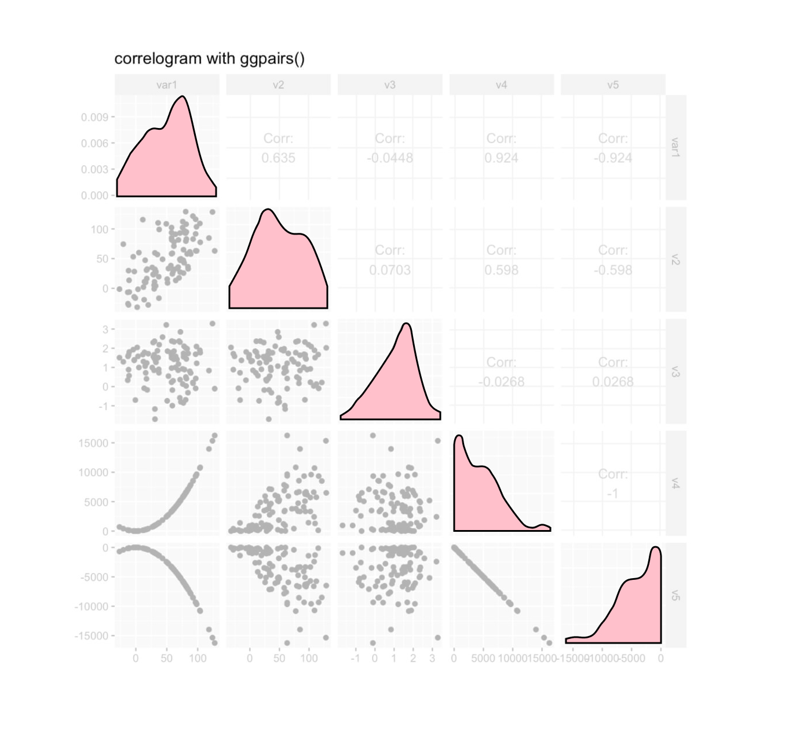
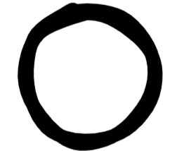
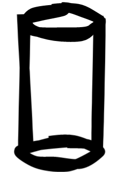

The matrix is based on the
wine quality dataset, showing physiochemical properties (acid, sugar, alcohol etc.) of
1,600 wines as well as their quality as tasted and rated by wine
experts (full story
over here).
Correlation matrices aren't very complex and provide a quick and
efficient read. All your variables are in the rows
AND in the columns. The circles encode the
correlation strength with size and lightness as well as the
correlation direction with the circle's hue.
Orange for negative and
blue for positive correlations in this
case.
This is all there is to know to efficiently look
up any correlation of interest like for example the correlation
between a wine's pH values and Citric Acid,
which — given the orange tint — seems to be negative, and of significant size with -0.54 in this case.
Or between alcohol and density, also negative, telling us that the higher the alcohol → the lower the density.
Or between the crucial wine quality and alcohol, which — maybe unsurpsingly — is positive. The higher the alcohol → the higher the quality (we can sense the limits of correlations in reality here as there's probably a tipping point a simple correlation won't capture).
As nice and efficient as this all is, it carries some slack, we can prune away; like for example the diagonal of auto-correlations. It's obvious that each variable is perfectly positively correlated with itself. So let's chop it off..
There are great visualisation packages out there, some of which use this space to show for example the density distribution of that variablebut to keep it minimal we're just removing it here.
But there's more to cut. In fact, more than half of the matrix can go, as the bottom right is just a reflection of the upper left.
This is it, I guess. To get a full overview, we can't really cut away anything else. We can tilt it into a correlation pyramid for different aesthetics,
...but that's a matter of taste.
Now, the reason I
started climbing down the correlation matrix basement to start with,
was a faint call from the 3rd dimension. Whenever I look at
correlation matrices, my inner eye doesn't only see circles

encoding correlation strength and direction but bars, or cylinders

pointing up or down. We can't see them as we're looking straight
down onto its flat surface, but I thought they might be worth to be
excavated.
It turns out the 3rd dimension isn't all too
helpful when you have a full matrix — as you can't see the
tree for the forest. Too busy.
BUT our particular
interest in the data is in correlation of all independent variables
with just a single output variable: the wine quality!
So, focussing in on quality...
we can now add a length encoding to the circles' hue and lightness, by turnining the circles into cylinders
Nice! Redundant encodings are good for efficiency they tought us in
visual data school, and here we have some possibly beneficial
redundancy.
Now it's your turn to take this for a spin.
Just continue to scroll and wait for the big white button to
interact with that matrix in 2 or 3 dimensions...